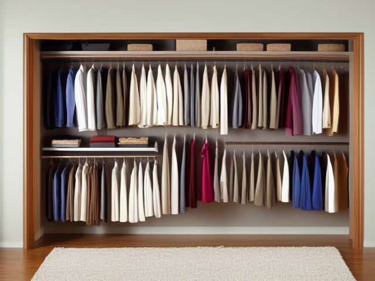

Primary Bedroom micro zone
The Primary Closet
The closet holds the clothes you actually wear this season, visible and reachable in one look.
One session: 60-90 min. most of it in Sort, and the try-on pile will take longer than you planned

What done looks like
One hanger style throughout, grouped by type and then by shade, every hook facing the same way. Shoes in pairs on a rack instead of a floor heap, bags standing upright on the shelf, belts on one hook. Two fingers of space between hanging items, a bare stretch of rod at one end, and floor you can stand on.
Check these before you start
- Fall, cut, or crushA rod loaded end to end with winter coats can tear its brackets out of plasterboard and bring the whole rail, and everything on it, down on you. Anchor into a stud and stop hanging past two fingers of space.
- FallA heap of shoes and bags across the closet floor is what you step onto half awake in an unlit room. Get the floor bare and the shoes onto a rack in pairs.
- Poison, choke, or strangleThin dry-cleaning bags cling to a face and are a suffocation risk if a small child plays in here. Pull them off at the door and bin them rather than storing clothes inside them.
The six passes, in order
Work them in this order. Sorting after you have arranged things means arranging things you were about to remove.
Sort
Decide what stays. Everything else leaves the zone now.
Pull out anything you have not worn in a year, anything waiting on a repair you are never going to make, and every wire hanger and plastic sheath the dry cleaner sent home. Winter coats and heavy knits go into a labelled bin or the guest wardrobe so the rod carries only what this month asks for.
Straighten
Give what stays a home, placed where the hand actually reaches.
Switch to one hanger style so everything hangs at the same depth and the row reads flat, group by type and then by shade, and hang the short items together so the floor under them opens up for the shoe rack. Bags stand up on the shelf rather than nesting inside one another where you forget the inner three.
Shine
Clean it, and use the cleaning to inspect what you cannot see when it is full.
Clear the floor completely, vacuum it and the corners, wipe the shelf edges and the rod itself where hangers leave a grey line, and check the back wall and skirting for damp before the shoes go back down.
Safety
Make the zone safe for everybody who uses it, including the shortest person.
An overloaded rod pulls its brackets out of the plasterboard, and it does it while you are standing underneath reaching in. Lean your weight on it and see, anchor the brackets into a stud, and get the shoe pile off the floor so you are not standing on a heel in the dark.
Standardize
Write down the best way you know today, so it survives you forgetting.
The rod is full when you cannot slide two fingers between hangers. From there it is one in, one out, and the bare stretch of rod at the end stays bare, because that is where the next coat lands.
Sustain
Attach the reset to something that already happens, so it keeps itself.
Turn every hanger backwards at the start of a season, and turn each one the right way round as you wear the item. When the season ends, the hangers still facing backwards have made the donation decisions for you.
The expensive mistake
There is one thing hanging in here that cost real money and does not fit your life: the suit for the job you left, the coat that is beautiful and far too warm, the shoes that turn on you after twenty minutes. You keep it because letting it go makes the money real. The money is already gone. It left the day you bought it, and keeping the garment does not bring back a penny of it; it just takes a hanger you need and gives you a small flinch every time you slide past. Set one deadline. Photograph it tonight, list it for sale, and if it has not sold in thirty days it goes to the charity shop without another conversation. The lesson is worth keeping. The garment is not.
Cleaning it properly
Clear the closet to bare rod, shelf and floor, then clean from the top shelf down to the corners. The rod and the back wall are what everyone leaves, and they are exactly where trouble starts.
Inspect as you clean. Cleaning is the only time you see the zone empty, so use it.
- A damp patch, a bloom of mildew or a musty smell on the back wall or skirting, the sign of moisture coming through.
- A rod bracket screw backing out of the wall, or the bracket flexing when you press down on the rod.
- Moth casings or grazed holes on the shoulders of stored wool coats.
- A soft or springy board underfoot in the closet floor.
The standard that keeps it fixed
One hanger style, grouped by type then shade, two fingers of space between items, and one in one out once the rod is full.
Reset trigger. When you hang up the first coat of a new season, turn every hanger on the rod backwards and start the count again.
Next in this room
- The Dresser Drawers, the zone before this one
- All 6 micro zones in the Primary Bedroom
Related reading
- What is 6S?
- This zone's safety pass, in full
- Is one spot in this zone always the one you skip?
- Why this zone gets messy again
- Decluttering vs. organizing
- Before you buy storage for this zone
- Still does not fit, even after the honest count?
- Does something in this zone actually get used somewhere else?
- Stuck on one item in this zone?
- Written the standard, but nobody else follows it?
- Does everyone in the house agree what "done" looks like here?
- Does more than one person use this zone?
- Found a duplicate of something in this zone?
- Why the standard above names one home per category
- Is the everyday item in this zone actually the easy one to reach?
- Not sure whether to keep something in this zone?
- Does this zone keep running out of something?
- Started this zone and stalled partway through?
When you want it off the screen
Carry The Primary Closet into the room
The method above is complete and free. The Whole House Print Pack puts The Primary Closet and the other 113 micro zones on 684 printable cards, so the steps you just read are not stuck behind a phone screen while your hands are full.
The Print Pack, 19 dollarsJust this zone, 4 dollarsOr draw a card free
The Primary Closet on its own is 4 dollars for 6 cards. All 114 micro zones is 19 dollars for 684. The whole house is the better buy; the single zone is here so you can take only what you are working on.
If The Primary Closet keeps fighting back, the real problem usually sits somewhere else in the room. A one hour virtual consult is 250 dollars: we find the function, the friction and the root cause together, and you keep a written standard for the space. See what a consult covers.